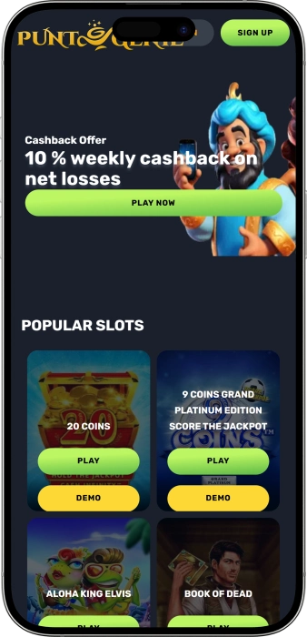

Exclusive welcome offer of
Exclusive welcome bonus of
Australia's Premier Online Betting Platform
Top Casinos
Bonus Details
Casino
Bonuses
Rate
Free Spins
More Info
Get
Advantages
- Looking for a trusted betting platform in Australia? We operate under Victorian Gambling and Casino Control Commission license with certified fair odds, offer instant deposits via PayID and POLi, and provide 24/7 support. Here's what makes us the preferred choice for Australian punters:
-
Licensed by Victorian Gambling & Casino Control Commission with full Australian compliance
-
AFL, NRL, cricket & racing coverage with competitive odds from trusted providers
-
Blended odds technology and Same Game Multi for enhanced betting flexibility
-
Instant deposits via PayID, POLi, Visa & Mastercard with AUD transactions only
-
Fast withdrawals processed within 1-2 business days to Australian bank accounts
-
24/7 Australian customer support via live chat, email and phone assistance
- Join thousands of satisfied Australian punters enjoying secure wagering with transparent odds and responsible gambling tools. Our dedicated support team is always ready to assist you, ensuring the best betting experience across all sports.
Puntgenie App


About Puntgenie Australia
Based in Melbourne, we've become a trusted Australian bookmaker since 2023. Licensed by VGCCC, we offer AFL, NRL, cricket & racing markets with competitive odds and innovative betting features for Australian punters.
- Launched platform with blended odds technology for Australian punters
- Introduced Same Game Multi feature for AFL and NRL betting markets
- Expanded coverage to 17+ sports categories with live betting functionality
- Released iOS and Android apps with instant odds refresh and notifications
We operate under strict Australian regulations ensuring fair play and secure transactions. Our platform uses advanced encryption for all data. Every market features certified odds with responsible gambling tools available 24/7. We continue expanding our sports portfolio with new markets and enhanced features for Australian punters. Our commitment to responsible gambling and transparent odds remains our priority. Experience premium betting with us today!
Complete Sports Betting Portfolio in Australia
Your Ultimate Australian Sports Betting Destination
Welcome to Australia's most innovative betting platform, where we combine cutting-edge technology with comprehensive sports coverage tailored specifically for Australian punters. Since our establishment in Melbourne, we've focused on delivering what matters most: competitive odds across AFL, NRL, cricket, racing and 17+ sports categories, lightning-fast deposits via PayID and POLi, and withdrawals processed within 1-2 business days. Our blended odds technology and Same Game Multi features set us apart from corporate bookmakers, giving you the flexibility and control to craft your perfect bet. Licensed by the Victorian Gambling and Casino Control Commission, we ensure every wager meets strict Australian fairness standards with transparent odds backed by certified providers and advanced encryption protecting your transactions.
AFL Betting Excellence for Australian Fans
AFL betting forms the cornerstone of our sportsbook, reflecting our deep understanding of what Australian football fans demand. We cover every match from the home-and-away season through to the Grand Final, offering extensive markets that go far beyond simple match results. Our AFL coverage includes head-to-head outcomes, line markets with competitive margins, total points over/under, winning margins, quarter-by-quarter betting, and detailed player proposition markets. You can wager on Brownlow Medal winners, Coleman Medal prospects, and premiership futures throughout the season, with odds updating in real-time as team form evolves.
Our Same Game Multi feature transforms AFL betting by allowing you to combine multiple selections from a single match into one bet with enhanced odds. Want to back your team to win, a specific player to kick three goals, and the total points to exceed 160? Our SGM builder makes it seamless. Australian punters appreciate our blended odds technology, which lets you hedge positions across multiple outcomes, effectively combining odds from different runners into a single price. Live betting during AFL matches keeps you engaged from first bounce to final siren, with markets refreshing instantly as the action unfolds. Whether you're backing Melbourne at the MCG or Fremantle at Optus Stadium, our AFL odds consistently rank among the sharpest available to Australian punters.
NRL Betting Markets for Rugby League Enthusiasts
Rugby league holds a special place in Australian sports culture, and our NRL betting markets reflect that passion. We cover every match from the opening round through to the Grand Final, including State of Origin clashes that captivate the nation. Our NRL markets span head-to-head results, line betting with adjusted handicaps, total points over/under, first try scorer predictions, anytime try scorer options, winning margins, and half-time/full-time combinations. Futures markets let you back premiership winners, Dally M Medal prospects, and top try scorer contenders months before the season concludes.
Same Game Multi betting elevates your NRL experience, enabling you to construct complex bets from a single match. Combine your team's victory with specific try scorers, point ranges, and other props into one wager with multiplied odds. Our live betting platform excels during NRL matches, offering in-play markets that update continuously as tries are scored and momentum shifts. Australian punters value our phone confirmation system for live bets, which complies with national regulations while maintaining the speed and convenience of online preparation. From Brisbane Broncos clashes at Suncorp Stadium to Penrith Panthers defending their territory, our NRL odds deliver genuine value backed by certified providers and transparent pricing algorithms.
Cricket Betting Throughout the Australian Summer
Cricket betting reaches its peak during the Australian summer, and we deliver comprehensive coverage across all formats. Our cricket markets encompass Test matches featuring the Australian team, One Day Internationals, T20 internationals, and the hugely popular Big Bash League that lights up January evenings. We offer match winner betting, top batsman and bowler predictions, total runs over/under, innings runs, method of dismissal, highest opening partnership, and player performance props that add excitement to every ball bowled.
- Test Match Betting: We cover Australia's Test series home and away with comprehensive markets including match results, series winners, top run scorer, top wicket taker, century scorer predictions, and session betting that updates throughout five days of play. Odds remain competitive across all sessions with margins designed for serious cricket punters.
- Big Bash League Coverage: The BBL represents peak T20 cricket entertainment in Australia, and we offer extensive markets for every match. Bet on match winners with updated odds reflecting team form, top batsman predictions featuring stars like Glenn Maxwell and Marcus Stoinis, top bowler markets, sixes over/under, and tournament winners throughout the competition. Same Game Multis work brilliantly for BBL matches, letting you combine team outcomes with player performances.
- ODI and T20I Markets: When Australia faces international opposition, we provide complete betting coverage with match results, series winners, player props, and innovative markets like highest individual score and method of first dismissal. Our odds update rapidly as conditions change, ensuring Australian punters always access current pricing.
- Live Cricket Betting: Our live betting platform shines during cricket matches, offering real-time markets that adjust with every boundary, wicket and strategic shift. In-play odds for next over runs, next wicket method, and match winner update continuously, allowing you to react to momentum changes as they happen. Live betting complements our responsible gambling tools, with deposit limits and time-outs available 24/7.
Australian Racing Coverage Across All Codes
Horse racing, greyhound racing and harness racing form essential parts of Australia's betting landscape. We provide comprehensive coverage of racing from tracks across Victoria, New South Wales, Queensland, South Australia, Western Australia and beyond. Our racing markets include win betting, place betting, quinella, exacta, trifecta, first four combinations, and exotic bets that appeal to experienced racing punters. We partner with TAB odds providers ensuring competitive pricing across all Australian racing codes throughout the year.
Melbourne Cup betting represents a highlight of our racing calendar, with extensive markets available months before the race that stops the nation. We cover all Group 1 races including the Cox Plate, Caulfield Cup, Golden Slipper, and The Everest with competitive odds and blended betting options. Our mobile app excels for racing punters, delivering instant odds updates, form guides, and quick bet placement that matches the fast pace of Australian racing. Deposits via PayID process instantly, ensuring you never miss backing your selection before the gates open. Withdrawals return to your Australian bank account within 1-2 business days, maintaining the efficiency punters expect from a Melbourne-based bookmaker.
Tennis Betting Year-Round for Australian Fans
Tennis betting extends beyond the Australian Open, though January's Grand Slam in Melbourne naturally receives premium coverage. We offer match winner markets, set betting, game handicaps, total games over/under, first set winners, and detailed proposition bets across ATP, WTA, and Grand Slam tournaments worldwide. Our tennis odds rank among the most competitive available to Australian punters, with margins kept tight across all tour events from Brisbane International through to the ATP Finals.
Live betting transforms tennis wagering, allowing you to back players between points and games as match dynamics evolve. Our platform updates continuously during play, offering in-match markets for next game winner, next set winner, and adjusted match odds based on current scores. Australian tennis fans appreciate our comprehensive coverage of local heroes competing internationally, with enhanced odds often available for special events. Whether you're backing Australians at Rod Laver Arena or following Wimbledon action through the European summer, our tennis markets deliver consistent value with transparent pricing and instant settlement.
Expanding Sports Portfolio Beyond the Big Three
While AFL, NRL, cricket, racing and tennis dominate Australian betting, we recognize punters' diverse interests. Our sportsbook covers 17+ categories including basketball (NBA, NBL), soccer (A-League, Premier League, Champions League), rugby union (Super Rugby, Wallabies Tests), golf (PGA Tour, Masters, Australian Opens), motorsport (Formula 1, Supercars), UFC and boxing, American football (NFL), baseball (MLB), and niche markets that expand your betting opportunities throughout the year.
Each sport receives professional attention with competitive odds sourced from certified providers. Our Same Game Multi functionality extends across most sports, letting you construct creative bets regardless of the competition. Live betting operates across major events, keeping you engaged from opening tip-off through to final buzzer. Australian punters value our consistent approach: transparent odds, instant deposits via PayID and POLi, fast withdrawals, and 24/7 support via live chat, email at support@puntgenie.com.au, or phone. Licensed by the Victorian Gambling and Casino Control Commission, we maintain the highest standards of fairness, security, and responsible gambling across every sport we cover.
Mobile Betting Apps for iOS and Android
Our mobile apps represent one of our strongest features, designed specifically for Australian punters who want to bet on the go. Available for iOS through the App Store and Android via Google Play, our apps deliver full functionality matching the desktop experience. Navigation is intuitive with instant odds refresh, smooth account management, quick deposit processing, and streamlined bet placement that takes seconds. Push notifications keep you updated on upcoming events, odds shifts, and results for your active bets, ensuring you never miss crucial moments.
The app's speed sets it apart from competitors, with markets loading instantly and bets confirmed within milliseconds. Deposits via PayID and POLi process through the app with the same security as desktop transactions, protected by advanced encryption that meets Australian banking standards. Live betting through mobile devices works flawlessly, with in-play markets updating in real-time regardless of network conditions. Whether you're at the MCG watching AFL, following NRL from your couch, or tracking cricket while commuting through Melbourne, our mobile apps deliver the complete betting experience Australian punters demand.
Responsible Gambling and Australian Support
We take responsible gambling seriously, providing comprehensive tools that help Australian punters stay in control. Deposit limits let you set daily, weekly, or monthly maximums that prevent overspending. Time-out features allow temporary breaks from betting, while self-exclusion options provide longer-term protection when needed. We display links to national support services including Gambling Help Online and offer 24/7 access to responsible gambling settings through your account dashboard.
Our customer support team operates around the clock via live chat, email at support@puntgenie.com.au, and phone support for urgent matters. Staff members understand Australian betting culture and regulations, resolving issues quickly with professionalism that earned us positive reviews from verified punters. Whether you need assistance with deposit methods, withdrawal processing, bonus terms, or technical questions, our team responds rapidly with accurate solutions. Security underpins everything we do, with SSL encryption protecting all transactions and personal data stored according to strict Australian privacy regulations. Licensed and regulated by the Victorian Gambling and Casino Control Commission, we operate with full transparency and accountability to Australian authorities.
Software Providers
Banking, Deposits & Withdrawals for Australian Punters
Seamless Banking Solutions for Australian Betting
Financial transactions form the backbone of any betting experience, and we've optimized our banking system specifically for Australian punters. Operating from Melbourne under Victorian Gambling and Casino Control Commission oversight, we understand the importance of instant deposits, fast withdrawals, secure processing, and local payment methods that Australians trust. Our banking infrastructure supports AUD transactions exclusively, eliminating foreign exchange fees and conversion uncertainties that plague international bookmakers. Whether you prefer traditional card payments, modern PayID transfers, POLi instant banking, or direct bank transfers, our platform accommodates your preferences with transparent processing times and zero hidden charges for deposit or withdrawal transactions.
We've partnered with Australia's leading payment processors to ensure every transaction meets national security standards. Advanced SSL encryption protects your card details, bank information, and personal data throughout the entire payment journey from initial deposit through final withdrawal. Our commitment to responsible gambling extends to financial controls, with deposit limit tools allowing you to manage spending effectively and withdrawal processes designed to return funds safely to verified Australian bank accounts. Licensed operators must maintain strict financial protocols, and we exceed minimum requirements with regular audits, segregated customer funds, and transparent terms that protect Australian punters at every stage.
Instant Deposit Methods for Australian Accounts
Speed matters when you spot value in the betting markets, which is why we prioritize instant deposit processing across all payment methods. Australian punters can fund their accounts using Visa debit and credit cards, Mastercard debit and credit cards, PayID transfers, POLi instant banking, and direct bank transfers from major Australian financial institutions. Deposits process immediately for card payments and PayID, meaning funds appear in your account within seconds ready for betting on AFL, NRL, cricket, racing or any of our 17+ sports categories.
| Method | Speed | Fees |
|---|---|---|
| Visa/Mastercard | Instant | Free |
| PayID | Instant | Free |
| POLi | Instant | Free |
| Bank Transfer | 1-2 hours | Free |
- Visa and Mastercard Deposits: Card payments represent the most common deposit method among Australian punters, offering universal acceptance and instant processing. We accept both debit and credit cards from all major Australian banks including Commonwealth Bank, Westpac, ANZ, NAB, and regional institutions. Enter your card details once through our secure payment gateway, and future deposits take just seconds with saved card options. We never charge processing fees for card deposits, and your bank typically doesn't either, making this a cost-effective choice. All card transactions use SSL 256-bit encryption meeting Australian banking security standards.
- PayID Instant Transfers: PayID has revolutionized Australian banking by allowing instant transfers using just an email address or mobile number linked to your bank account. Depositing via PayID with us is simple: select the PayID option, choose your deposit amount in AUD, and your banking app opens automatically to confirm the transfer. Funds appear in your betting account within seconds, perfect for backing last-minute bets before races start or matches kick off. PayID works with all major Australian banks and charges zero fees from our end, though some banks may impose small charges depending on your account type.
- POLi Instant Banking: POLi provides another instant deposit solution specifically designed for Australian residents, connecting directly to your internet banking without requiring card details. Select POLi as your deposit method, choose your bank from the list of supported institutions, and complete the transaction through your bank's familiar online interface. Funds transfer immediately to your betting account, and POLi's security protocols ensure your banking credentials never pass through third-party systems. This method suits punters who prefer not to share card details online while still demanding instant deposit processing.
- Direct Bank Transfers: Traditional bank transfers remain available for punters who prefer this familiar method, though processing takes longer than instant options. Initiate a transfer from your Australian bank account to our designated account using your unique reference number, and funds typically appear within 1-2 hours during business days. While slower than PayID, POLi, or cards, bank transfers work reliably for larger deposits and carry no fees from our side. We recommend instant methods for time-sensitive betting, reserving bank transfers for planned deposits outside urgent betting windows.
Fast Withdrawal Processing to Australian Banks
Withdrawing your winnings should be as smooth as depositing funds, and we've streamlined the process for Australian punters. Withdrawal requests process within 1-2 business days, returning funds directly to your verified Australian bank account via bank transfer. We don't charge withdrawal fees, meaning the full amount you request arrives in your account without deductions. While we can't control banking processing times once funds leave our system, most Australian banks credit incoming transfers within hours of initiation, meaning you typically receive your winnings within 2-3 business days of requesting withdrawal.
Before your first withdrawal, we require account verification to comply with Australian regulations and prevent fraud. Verification involves submitting a government-issued photo ID such as an Australian driver's license or passport, plus a recent proof of address document like a utility bill or bank statement showing your residential details. Our team reviews verification documents quickly, usually approving accounts within 24 hours during business days. Once verified, subsequent withdrawals process automatically without additional document requests unless your account details change.
Australian Dollar Transactions Only
Operating exclusively in Australian dollars eliminates the currency conversion headaches that plague international betting sites. When you deposit AUD 100, your account shows AUD 100 without hidden conversion fees or unfavorable exchange rates reducing your balance. All odds display in Australian dollar payouts, making it simple to calculate potential returns without currency math. When you win, your returns credit in AUD and withdraw in AUD to your Australian bank account, maintaining complete financial clarity throughout your betting journey.
This AUD-only approach reflects our focus on the Australian market and commitment to transparent operations. You won't encounter surprise foreign transaction fees from your bank when depositing or withdrawing, as all movements stay within Australian banking systems. For Melbourne-based punters and Australian residents nationwide, this local currency approach provides peace of mind and financial predictability that international operators struggle to match.
Security and Fraud Prevention Standards
We implement multiple security layers protecting your financial information and funds at all times. SSL 256-bit encryption secures all data transmitted between your device and our servers, making it impossible for unauthorized parties to intercept banking details, card numbers, or personal information. Our payment partners maintain PCI-DSS compliance, the global standard for card payment security, ensuring card details stay protected throughout processing. Two-factor authentication adds an extra verification step for account access and withdrawal requests, preventing unauthorized access even if login credentials are compromised.
Suspicious transaction monitoring runs continuously, flagging unusual deposit patterns, withdrawal requests, or account activity that might indicate fraud or account compromise. Our security team investigates flagged transactions immediately, sometimes requesting additional verification before processing withdrawals to protect your funds. While this occasionally delays withdrawals slightly, the extra security protects Australian punters from unauthorized access and fraudulent withdrawals. Licensed by the Victorian Gambling and Casino Control Commission, we maintain segregated customer accounts ensuring your deposited funds remain separate from operational finances, protecting your balance even in the unlikely event of business disruption.
Deposit Limits and Responsible Gambling Controls
Responsible gambling starts with financial control, and we provide comprehensive deposit limit tools helping Australian punters manage their betting budgets effectively. Set daily, weekly, or monthly deposit limits through your account settings, establishing maximum amounts you can deposit within each timeframe. Once limits are active, the system automatically blocks deposit attempts that would exceed your chosen thresholds, preventing impulse deposits during emotional moments or losing streaks.
- Daily Deposit Limits: Restrict how much you can deposit in any 24-hour period, ideal for maintaining strict daily budgets. If you set a $50 daily limit, the system prevents additional deposits once you reach that threshold until 24 hours pass from your first deposit of the day. Daily limits reset automatically at midnight AEDT.
- Weekly Deposit Limits: Control your weekly spending with rolling 7-day limits that track your total deposits over any consecutive week. This prevents overspending during busy betting weeks with multiple AFL rounds, NRL matches, and racing events competing for your attention. Weekly limits suit punters who prefer flexible daily spending within controlled weekly boundaries.
- Monthly Deposit Limits: Establish long-term budgets with monthly maximums tracking your deposits across calendar months. This approach works for experienced punters managing betting as part of monthly entertainment budgets alongside other discretionary spending. Monthly limits provide maximum flexibility while preventing total spending from exceeding predetermined thresholds.
- Limit Adjustments and Cooling Periods: Decreasing deposit limits takes effect immediately, giving you instant control when you need to reduce spending. Increasing limits involves a 24-hour cooling period, preventing impulsive limit raises during losing sessions when emotions override rational decision-making. This protective delay helps Australian punters maintain control and avoid chasing losses with increased deposits.
Account Verification Process for Australian Residents
Account verification protects both punters and bookmakers by confirming identity and preventing underage gambling, money laundering, and fraudulent accounts. We require verification before processing your first withdrawal, though you can deposit and bet immediately upon registration. The verification process is straightforward: access the account verification section, upload a clear photo or scan of your government-issued ID showing your name, photo, date of birth, and document number. Acceptable IDs include Australian driver's licenses, passports, proof of age cards, or other government photo identification.
Next, submit proof of address dated within the last three months showing your current residential address matching your account registration details. Acceptable documents include utility bills (electricity, gas, water, internet), bank statements, or government correspondence displaying your name and address clearly. Our verification team reviews submitted documents within 24 hours during business days, usually approving accounts faster. Once verified, your account gains full withdrawal access, and you won't need to reverify unless you change banking details or request withdrawals to different accounts.
Payment Security and Privacy Protection
Your financial privacy matters, and we implement strict protocols protecting your banking information. We never store complete card numbers on our servers; instead, payment processors tokenize card details, storing encrypted references that are useless to potential hackers. When you save a card for future deposits, only the last four digits display, with full details secured in payment partner vaults meeting international security standards. Bank account details for withdrawals undergo similar protection, with full account numbers never displayed in plain text within your account dashboard.
We never share your financial information with third parties except payment processors essential for transaction processing, and we never sell data to marketers or external companies. Australian privacy regulations govern our data handling, giving you rights to access, correct, or delete personal information subject to regulatory retention requirements. Our privacy policy outlines exactly what information we collect, why we collect it, how we use it, and who can access it, providing complete transparency about data handling throughout your betting journey with us.
Customer Support for Banking Questions
Banking questions deserve quick answers, and our 24/7 support team specializes in helping Australian punters resolve deposit, withdrawal, and account issues efficiently. Contact us via live chat through the website or mobile app for instant responses, email support@puntgenie.com.au for detailed inquiries requiring documentation, or call our Australian phone line for urgent matters requiring immediate assistance. Our team handles common questions about deposit methods, withdrawal processing times, verification requirements, payment failures, and account balance discrepancies with professionalism and speed that consistently earns positive reviews.
If a deposit fails, our team investigates immediately, checking payment processor logs and banking system responses to identify the issue. Common causes include insufficient card funds, expired cards, incorrect banking details, or temporary payment gateway issues. Our team guides you through solutions, often resolving problems within minutes. For withdrawal delays, we provide transparent status updates showing exactly where your withdrawal sits in the processing queue and estimated completion times. Licensed and regulated in Melbourne under Victorian Gambling and Casino Control Commission oversight, we maintain the highest standards of customer service across all banking interactions, ensuring Australian punters receive the support they deserve when managing their betting accounts.
Frequently Asked Questions
Deposit using Visa, Mastercard, PayID, POLi, or bank transfer from your Australian bank account. Card and PayID deposits process instantly, appearing in your account within seconds. POLi transfers are also immediate, while bank transfers take 1-2 hours. We charge zero deposit fees for all methods.
Withdrawals process within 1-2 business days to your verified Australian bank account. Once we initiate the transfer, most Australian banks credit funds within hours, meaning you typically receive winnings within 2-3 business days total. We don't charge withdrawal fees.
Yes, we operate under a license from the Victorian Gambling and Casino Control Commission, ensuring full compliance with Australian regulations. Our platform uses SSL 256-bit encryption protecting all transactions and personal data. We maintain segregated customer accounts and responsible gambling tools.
We cover 17+ sports including AFL, NRL, cricket, horse racing, greyhound racing, tennis, basketball, soccer, rugby union, golf, motorsports, UFC, boxing, NFL, and MLB. Our platform specializes in Australian sports with comprehensive AFL, NRL, and Big Bash League coverage plus live betting.
Same Game Multi (SGM) lets you combine multiple selections from one match into a single bet with enhanced odds. For example, back your AFL team to win, a player to kick three goals, and total points over 160 in one wager. Use our SGM builder to construct bets across AFL, NRL, and cricket matches easily.
Yes, our apps are available for iOS via App Store and Android through Google Play. The apps offer full betting functionality with instant odds refresh, push notifications for events and results, quick deposits via PayID and POLi, and seamless live betting for Australian punters on the go.
PayID and POLi offer the fastest deposits, processing instantly within seconds. Card payments via Visa and Mastercard are also immediate. For withdrawals, bank transfers complete within 1-2 business days. All methods support AUD transactions without conversion fees or international charges.
Submit a government-issued photo ID (Australian driver's license, passport, or proof of age card) plus recent proof of address dated within three months (utility bill, bank statement, or government correspondence). Our team reviews documents within 24 hours during business days, approving most accounts quickly.
Yes, set daily, weekly, or monthly deposit limits through your account settings. Limits block deposits exceeding your chosen thresholds, helping you maintain budget control. Decreasing limits applies immediately, while increases involve a 24-hour cooling period preventing impulsive adjustments during losing sessions.
Contact us 24/7 via live chat through the website or mobile app for instant assistance, email support@puntgenie.com.au for detailed inquiries, or call our Australian phone line for urgent matters. Our team responds quickly, resolving deposit, withdrawal, and betting questions with professional support.